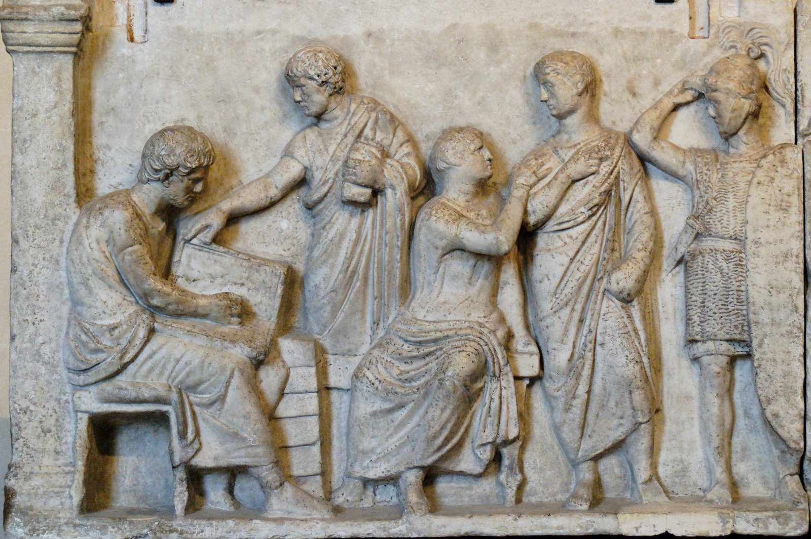

Unit 6 · Slavery in ancient Rome · Lesson 3
How many? The extent of slavery and the problem of numbers
No one counted Rome’s enslaved people. So how do historians estimate how many there were, and how sure can they be?
Year 11 Ancient History · Present with → or space · Read on a phone with R

Review · books closed · 6 minutes · press K for the timer
Five questions from Lessons 1–2, and one sentence to fix
- Put the five parts of the OVPRL routine in order. How is reliability always judged? Origin, Value, Purpose, Reliability, Limitations (the OVPRL routine on page 2 of your booklet). Reliability is judged for a question: “reliable for … but not for … because …”.
- What period does this unit study, and why does it start about 200 BCE? About 200 BCE to 200 CE: from the mass enslavements of Rome’s 2nd-century BCE wars to the Antonine emperors (138–192 CE).
- Name two ways people became enslaved, with a source for each. Any two: war (Caesar, Gallic War 2.33: 53,000 by the buyers’ return); pirates (Strabo 14.5.2); birth (Gaius, Institutes 1.82); exposure (Pliny’s question and Trajan’s reply, Letters 10.65–66); self-sale or debt (Digest 1.5.5.1; Diodorus 36.3).
- According to Strabo, why did Delos become a great slave market? The Romans, ‘having become rich after the destruction of Carthage and Corinth, used many slaves’ (after 146 BCE), and pirates found selling captives ‘most profitable’; Delos was near enough to sell them (Strabo 14.5.2).
- What does Gaius, Institutes 1.82, say about a child’s status, and why does it matter? As a rule the child followed the mother: ‘the offspring of a female slave and a freeman is by jus gentium a slave’. So slavery could renew itself without war.
- Writing · fix this sentence: “Strabo proves that 10,000 slaves were sold every day.” Three faults: proves is too strong (Strabo claims); sold every day misreads him (he says the market could handle that many: capacity, not sales); and ‘slaves’ stands outside a quotation. For example: Strabo claims that Delos ‘could both admit and send away ten thousand slaves on the same day’ (14.5.2), a boast of its capacity, not a count of daily sales.
Mark your own answers in a different colour. Which question did you find hardest?
Learning intentions and success criteria · 2 minutes
Today’s goals
- analyse the evidence for the extent of slavery in Roman Italy and the empire
- hedge and attribute modern estimates
- explain why the number of enslaved people cannot be counted
- compare an older estimate with Scheidel’s and say why they differ
- write a claim about numbers that names its author and matches certainty to the evidence
Syllabus outcomes: AH-11-02 proposes ideas about the varying causes and effects of events and developments · AH-11-05 analyses different types of sources for evidence to support a historical account or argument · AH-11-07 communicates historical understanding, applying historical knowledge, terms and concepts. Life Skills: AH-LS-08 uses sources to form conclusions about the past · AH-LS-11 communicates information about the past using historical terms and concepts.
Note-making · the routine for the whole course
How to structure your notes
questions and key terms, written after
short phrases, arrows (→ leads to), abbreviations (c. = about; % = per cent)
- 1A new pageA cue column about a quarter of the page wide; title and date at the top; room for a summary at the bottom.
- 2Listen and look, then writePhrases, not sentences. Today: every number with who gave it and when.
- 3Write your own notes at the ✎ checkpointThen compare with the model notes, one row at a time. Add what you missed in a second colour.
- 4Write the cue questions afterwardsUse exam verbs: explain, assess. To revise, cover your notes and answer the cues.
- 5Finish with a three-sentence summaryOne checkpoint today: the problem of numbers. The estimates table in your booklet is your notes for the We do.
Key vocabulary · add to the unit word wall
Words for talking about numbers
| From the unit list | Meaning |
|---|---|
| Assess (NESA) | ‘Make a judgement of value, quality, outcomes, results or size.’ — Make and support a judgement. |
| Hedge | A word that matches certainty to the evidence: perhaps, probably, on one estimate. |
| Slave society | A society in which slavery is central to the economy and social order; Bradley calls Rome one by the mid-2nd century BCE. |
| Enslaved person / slave | ‘Enslaved person’ (the syllabus’s term) keeps the person in view; ‘slave’ is used when quoting sources and in established terms (‘slave wars’). |
| Added today | Meaning |
|---|---|
| Census | Rome’s register of its citizens and their property. |
| Estimate | A reasoned figure for something nobody counted, made by a named historian from stated assumptions. |
| Range | The lowest and highest figures an estimate allows (e.g. 15–25 per cent): it shows how uncertain the estimate is. |
| Model | A historian’s calculation that builds a total step by step from smaller estimates. |
| Extrapolation | Extending a pattern from cases you know to cases you don’t: from one household to all of Italy, or from another slave society to Rome. |
| Symbolic number | A round figure used for effect (400, 10,000), not a count. |
1 · The problem of numbers · I do — why numbers matter, and why we lack them
Why numbers matter, and why we lack them
- 1Why numbers matterHow many people were enslaved helps decide what kind of society Rome was: was slavery at the centre of Italy’s economy, or one kind of labour among several?
- 2Rome counted citizensThe census recorded citizens and their property. Even its surviving totals are debated: Augustus’s 4,063,000 (28 BCE) may count all free people, or only adult male citizens (Bradley, 2011).
- 3No count of enslaved people survivesWalter Scheidel (2011): “We do not know the number of slaves in any particular community of Roman Italy or in a particular sector of the economy at any given point in time, let alone for the region as a whole.”
- 4So historians have two kinds of numberAncient figures for single cases, which are claims, not counts; and modern estimates, which need an owner, a range and a hedge.
Why can’t historians simply count the enslaved people of Roman Italy?
Because no count survives. The census recorded citizens and their property, and even its totals are debated. So every figure we have is either an ancient claim about one case or a modern estimate.
1 · The problem of numbers · I do — think aloud · what kind of number is each?
A will, a speech and a law: what kind of number is each?
… declared by his will, that though he had suffered great losses through the civil wars, he was still able to leave behind him four thousand one hundred and sixteen slaves, three thousand six hundred pairs of oxen …
Pliny the Elder, Natural History 33.135, written in the 70s CE, on the will of Gaius Caecilius Claudius Isidorus, 8 BCE · trans. J. Bostock and H. T. Riley (1855)
Precise, and probably taken from the will, but reported by Pliny about 85 years later, in a chapter on great fortunes: chosen because it was extraordinary.
Who will be kept safe by the number of his slaves when four hundred have not protected Pedanius Secundus?
Tacitus, Annals 14.43, early 2nd century CE, in the speech he gives the senator Gaius Cassius, arguing that the household of Pedanius Secundus, murdered in 61 CE, must be executed · trans. A. J. Church and W. J. Brodribb (1876)
A round number in a speech Tacitus composed for a senator more than 50 years later: it may be accurate, or chosen for effect. Walter Scheidel (2011) calls it ‘a purely symbolic number’.
… he who has more than a hundred and not more than five hundred is allowed to manumit a fifth …
Gaius, Institutes 1.43, about 160 CE, on the Augustan law limiting how many enslaved people an owner could free by will · trans. E. Poste, rev. E. A. Whittuck (1904)
Not a count at all: the law expected some owners to hold hundreds of enslaved people, but it cannot say how many owners did.
So what can one rich household tell us about Italy?
That very large holdings existed among the richest, but not how many people were enslaved across Italy. Scheidel: such cases “may well hint at a much bigger iceberg underneath”, but “they are of little help in generating a usable estimate”.
Notes checkpoint · I do · 2 minutes · cue: what kind of number?
The problem of numbers
2 · The estimates · We do — read the extracts · 4 minutes · underline each figure, its owner and its date
Three historians, three ways to answer “how many?”
Population proportions can never be more than estimated, and conjectures do not always coincide: the servile population of Italy at the end of the first century [BCE] has been calculated at two million out of a total population of six million (Hopkins [1978], 102), and three million out of a total of seven and a half million (Brunt [1971], 124).
K. R. Bradley, Slavery and Rebellion in the Roman World (1989), p. 146, note 3, reporting K. Hopkins, Conquerors and Slaves (1978) and P. A. Brunt, Italian Manpower (1971). Servile: enslaved.
In my model, the most probable range of outcomes is consonant with a cumulative total of between 1 and 1.5 million slaves in Italy at the peak of this labour regime, equivalent to some 15–25 per cent of the total population.
How: he adds up the likely demand for enslaved workers, sector by sector, and warns that his method “necessarily entails huge margins of error”. On the one-third view: it “owes more to unwarranted extrapolation from conditions in the Antebellum South or nineteenth-century Brazil than to any information preserved in ancient sources.”
W. Scheidel, “The Roman slave supply”, Cambridge World History of Slavery, vol. 1 (2011), pp. 288–9. Antebellum South: the American South before its Civil War (1861–65).
… Rome in fact was a genuine slave society, though such a description does not have to depend solely on the quantitative criterion of the servile proportion of the total population.
K. R. Bradley, Slavery and Rebellion in the Roman World (1989), p. 19, on Rome by the middle of the 2nd century BCE. Quantitative: about numbers.
As you read: underline each figure, box who gives it and when, and circle the words that show how sure the writer is.
We do — pairs complete the estimates table in your booklet · 3 minutes
The estimates table: who, when, what figure, how?
| Who | When | Figure for Italy | Method | Criticism |
|---|---|---|---|---|
| Keith Hopkins | 1978 | about 2 million of 6 million: a third (end of the 1st century BCE) | an enslaved share of an estimated total population (‘top-down’, in Scheidel’s word) | Scheidel: owes more to “unwarranted extrapolation” from the American South and Brazil than to ancient evidence |
| P. A. Brunt | 1971 | 3 million of 7.5 million: 40 per cent (same date) | the same kind of calculation | the same criticism |
| Walter Scheidel | 2011 (his model of 2005) | 1–1.5 million at the peak: “some 15–25 per cent” | a model: adds up the likely demand for enslaved workers, sector by sector | his own warning: “huge margins of error”; it rests on starting assumptions |
| Keith Bradley | 1989 | none in this definition: Rome was ‘a genuine slave society’ by the mid-2nd century BCE (on the same page he accepts about a third of Italy enslaved by about 225 BCE) | a definition: what slavery did to Rome’s economy and society, not numbers alone (on law and religion, he says, Rome qualifies even earlier) | tells us what kind of society, not how many |
Two older estimates, a third or more; one model, about a sixth to a quarter. The difference comes from the method and a different view of Italian farming, not from a new ancient count.
2 · The estimates · We do — cold call · 3 minutes
What does each estimate assume, and which is more defensible?
What does each estimate assume?
The older view, as Bradley (2011) summarises it: that the free population fell after the war with Hannibal while the enslaved population grew, that the city of Rome grew very large, and ‘a low count of the Augustan census figure’. Scheidel: that Italian farming could employ only so many enslaved workers, plus his starting assumptions about households.
Which is more defensible, and why?
On today’s evidence, probably Scheidel’s, because he builds it from stated assumptions that others can test, while the older share was, he argues, borrowed from the Americas. But it is still a model with “huge margins of error”, so it gives a range, not a fact. Bradley (2011): “Consensus remains elusive.”
3 · You do · Writing focus · 7 minutes · I do → We do → apply
Writing focus: every estimate needs an owner, a range and a hedge
For numbers about Rome: an ancient figure gets its writer (“Pliny reports …”); a modern estimate gets an owner, a range and a hedge. High words almost never fit.
Worked example · written for this lesson · on the empire, not today’s question about Italy
Scheidel’s model puts enslaved people at perhaps 7–13 per cent of the empire’s population, “somewhere close to one tenth”, a figure he says rests on “explicit assumptions”.
Owner: whose estimate, and how it was made
Hedge: one word, matched to a model
Range: low to high, not one figure
Rewrite this as an attributed, hedged claim: “A third of Italians were slaves.”
Check it has: an owner and year · a range or “about” · one hedge · ‘enslaved people’.
Hopkins (1978), as Bradley (1989) reports him, calculated that about two million of Italy’s six million people, roughly a third, were enslaved at the end of the 1st century BCE: an estimate, not a count.
Every number in your paragraph names its owner and year, gives a range or “about”, and carries one hedge: “[Historian] ([year]) estimates that perhaps …; [an older view] …, but …” Your Writing toolkit (booklet pages 3–4): the modality scale.
3 · You do · 18 minutes · check first · then write for 12 · press K for the timer
Assess how far historians can measure the extent of slavery in Roman Italy.
Check first: what does this question ask you to do?
- Verb
- assess: NESA, ‘Make a judgement of value, quality, outcomes, results or size.’ With “how far”: a judgement of degree
- Topic
- whether historians can measure how many people were enslaved, and what share of the population
- Limits
- Roman Italy, not the whole empire; our period; what historians can do with the evidence that survives
- Do
- a degree first; one ancient number and two modern estimates, each with its owner; why they differ; their limits; end on the same degree
Scheidel argues that the one-third figure owes more to the American South and Brazil than to ancient evidence. Assess whether comparing Rome with other slave societies helps or misleads a historian.
- Judge with a degree: largely · partly · only to a limited extent, and your main reason.
- Evidence: one ancient number (say what kind it is) and two modern estimates, each with an owner, a range and a hedge.
- Analyse why the estimates differ. Evaluate what no method can do. Resolve on the same degree.
First sentence: “Historians can measure the extent of slavery in Roman Italy …, because …” Word bank:
3 · You do · self-check · 3 minutes · then, after you write, compare with a model
Check your paragraph
Historians can measure the extent of slavery in Roman Italy only to a limited extent, because no count survives and every figure is either an ancient claim about one case or a modern estimate built on assumptions. The ancient numbers describe the richest households: Pliny reports that Isidorus left ‘four thousand one hundred and sixteen slaves’ by his will in 8 BCE, but Scheidel warns that such extreme cases are ‘of little help in generating a usable estimate’. Modern estimates therefore depend on method, and they differ widely: Hopkins (1978) calculated about two million enslaved people out of six million, roughly a third, whereas Scheidel (2011) estimates perhaps 1–1.5 million, some 15–25 per cent, at the peak. The gap arises because the older share was, in Scheidel’s view, borrowed from the American South and Brazil, while his own model builds up demand sector by sector. Yet Scheidel admits that his method ‘entails huge margins of error’, so even his figure is a better-grounded estimate, not a measurement. Historians can therefore estimate the extent of slavery in Italy within wide ranges, but measure it only to a limited extent.
“Partly” works too, if your reasons support it: for example, that the models at least narrow the range and test the older guesses.
Finish your notes If time · or at home
Summary: three sentences
- Why can’t the enslaved people of Roman Italy be counted?
- How do the older estimates and Scheidel’s differ, and why?
- What does a claim about numbers need?
No count of enslaved people survives for Roman Italy: the census recorded citizens, and ancient figures such as Isidorus’s 4,116 or Pedanius’s 400 describe single, exceptional households. Older estimates put about a third or more of Italy’s population in slavery (Hopkins, 1978; Brunt, 1971), but Scheidel (2011) estimates perhaps 15–25 per cent, because he builds his figure from likely demand, while the older share, he argues, owes more to the Americas than to ancient evidence. A claim about numbers therefore needs an owner, a range and a hedge.
Check · gesture vote · 4 minutes · one finger too weak · two about right · three too strong
Too weak, about right, or too strong?
1 “Tacitus proves that Pedanius Secundus owned exactly four hundred enslaved people.”
Too strong (three): ‘proves’ and ‘exactly’. ‘Four hundred’ is a round figure in a speech Tacitus wrote for a senator; Scheidel calls it ‘a purely symbolic number’. Better: “In the speech Tacitus gives Cassius, Pedanius’s household numbers four hundred, a figure Scheidel treats as symbolic.”
2 “Scheidel has argued that perhaps 10,000–20,000 enslaved people a year were brought into Italy in the 2nd and 1st centuries BCE.”
About right (two): ‘perhaps’. An owner, a range and one hedge, and Scheidel himself offers it only ‘for what it is worth’.
3 “It might possibly be the case that some Romans may perhaps have owned enslaved people.”
Too weak (one): ‘might possibly … may perhaps’. Stacked hedges, and the evidence is stronger than that. Better: “The sources imply that owning enslaved people was widespread among the rich (Scheidel, 2011).”
Exit ticket · 3 minutes · before you leave
Your hedged, attributed sentence
Write one sentence about how many people were enslaved in Roman Italy. Name the historian and the year, give a range (or “about”), and match your certainty to the evidence.
an owner and a year (Scheidel, 2011; or Hopkins, 1978, as Bradley reports it); a range or “about” (1–1.5 million; some 15–25 per cent; about a third); one hedge (perhaps, on one estimate, estimates), not “proves”; ‘enslaved people’; and, for the strongest answers, what the figure rests on (a model with wide margins; an older share Scheidel rejects).
Then check yourself against today’s three “I can” statements. Next lesson: men, women and children: who were the enslaved?
Practice and review · 1 of 4 · true, false, justify
True or false? Justify your answer
- 1A count of the enslaved people of Roman Italy survives in the census. False — the census recorded citizens and their property; no count of enslaved people in Italy survives.
- 2Pliny reports that Isidorus left 4,116 enslaved people by his will. True — Natural History 33.135, a will of 8 BCE, in a chapter on great fortunes: one exceptional household.
- 3Scheidel accepts that about a third of Italy’s population was enslaved. False — he calls that view ‘unwarranted extrapolation’ from the Americas; his model gives some 15–25 per cent at the peak.
- 4Scheidel’s figure for Italy is a count. False — it is an estimate from a model that, he says, ‘entails huge margins of error’.
- 5Bradley calls Rome a slave society by the mid-2nd century BCE without resting the label on numbers alone. True — it ‘does not have to depend solely on the quantitative criterion’ (1989, p. 19).
- 6The 400 in Tacitus’s account of Pedanius Secundus is a precise count of his household. False — it is a round figure in a speech Tacitus wrote for a senator; Scheidel calls it ‘a purely symbolic number’.
Practice and review · 2 of 4 · writing
Kinds of number, and a sentence to fix
- 4,116 (Pliny, on Isidorus)
- 400 (Tacitus, on Pedanius Secundus)
- “more than a hundred and not more than five hundred” (Gaius 1.43)
- 15–25 per cent (Scheidel, 2011)
Choose from: a figure from one will · a round figure in a speech · a law’s brackets · a modern estimate.
1: a figure from one will. 2: a round figure in a speech. 3: a law’s brackets. 4: a modern estimate. Only 4 is about Italy as a whole, and it is not a count.
“There were 8 million slaves in the Roman Empire.” Give it an owner, a range and a hedge.
Scheidel (2011) works with a range of ‘somewhere between 5 and 8 million’ enslaved people across the whole empire, perhaps 7–13 per cent of its population: an estimate built on his model’s assumptions, not a count.
Practice and review · 3 of 4 · extension
Comparing Rome with other slave societies: help or hindrance?
Scheidel argues that the one-third figure owes more to the American South and Brazil than to ancient evidence. Assess whether comparing Rome with other slave societies helps or misleads a historian.
Comparison misleads a historian when it replaces evidence: Scheidel argues that the one-third figure owes more to ‘unwarranted extrapolation from conditions in the Antebellum South or nineteenth-century Brazil’ than to ancient sources. Yet comparison also helps, because Scheidel himself uses the United States census to show how severe Rome’s lack of figures is (for most slave societies, he notes, ‘uncertainty and guesswork are the norm’), and he warns that estimates backed by comparison ‘run the risk of circularity’ while estimates without it ‘invite arbitrary implausibility’. Comparing Rome with other slave societies therefore helps a historian to ask what was possible, but misleads whenever another society’s figures are carried over as if they were Roman evidence.
Practice and review · 4 of 4 · cover your notes and answer from memory
Quick checks
- Why can’t historians count the enslaved people of Roman Italy? No count survives: the census recorded citizens and their property, and even its totals are debated. Every figure is an ancient claim or a modern estimate.
- What kind of number is Isidorus’s 4,116? A figure from one man’s will (8 BCE), reported by Pliny in the 70s CE among great fortunes: an extreme case, not a guide to Italy.
- Why does Scheidel call Pedanius’s 400 ‘a purely symbolic number’? It is a round figure in a speech Tacitus wrote for a senator; Scheidel notes that such round numbers abound in ancient writers, and that their context invites exaggeration.
- How do the older estimates and Scheidel’s differ, and why? Older: a third or more (Hopkins 1978: 2 of 6 million; Brunt 1971: 3 of 7.5 million). Scheidel (2011): 1–1.5 million, some 15–25 per cent, built up from likely demand; he says the older share was borrowed from the Americas.
- What did Bradley (1989) mean by ‘a genuine slave society’? That by the mid-2nd century BCE slavery was central to Rome’s transformed economy and society; the label, he says, need not rest on numbers alone, and on the evidence of its law and religion Rome qualifies even earlier.
- What three things does a claim about numbers need? An owner (with the year), a range or “about”, and one hedge matched to the evidence.
Sources and credits
Where everything comes from
Pliny the Elder, Natural History 33.135: trans. J. Bostock and H. T. Riley (1855, public domain), Perseus Digital Library (Perseus text CC BY-SA 3.0 US). Tacitus, Annals 14.42–43: trans. A. J. Church and W. J. Brodribb (1876, public domain), Perseus Digital Library (CC BY-SA 3.0 US). Gaius, Institutes 1.43 and 1.82: trans. E. Poste, rev. E. A. Whittuck (Oxford, 1904, public domain), archive.org. Strabo, Geography 14.5.2: trans. H. L. Jones (Loeb, vol. VI, 1929, public domain), LacusCurtius.
Modern historians, quoted briefly: W. Scheidel, “The Roman slave supply”, and K. Bradley, “Slavery in the Roman Republic”, in K. Bradley and P. Cartledge (eds), The Cambridge World History of Slavery, vol. 1 (Cambridge University Press, 2011), pp. 287–310 and 241–64; K. R. Bradley, Slavery and Rebellion in the Roman World (Indiana University Press, 1989), pp. 19 and 146, reporting K. Hopkins, Conquerors and Slaves (1978) and P. A. Brunt, Italian Manpower (1971). The census frieze: the Louvre’s collection record (Ma 975), its Wikimedia Commons record and Wikipedia, “Altar of Domitius Ahenobarbus”. Bar picture drawn for this lesson. The NESA Glossary of key words (definitions quoted word for word).
Outcomes and content: NSW Education Standards Authority (NESA), Ancient History 11–12 Syllabus (2024). © NESA.
- A Roman census: an official records a citizen’s declaration (left part of the ‘census frieze’ from the so-called Altar of Domitius Ahenobarbus, Rome, about 150–100 BCE; Louvre, Ma 975) · Photo: Marie-Lan Nguyen (Jastrow) · Public domain · source

All images are public domain or openly licensed, and were resized or cropped for the web. Each is shared under the licence shown.